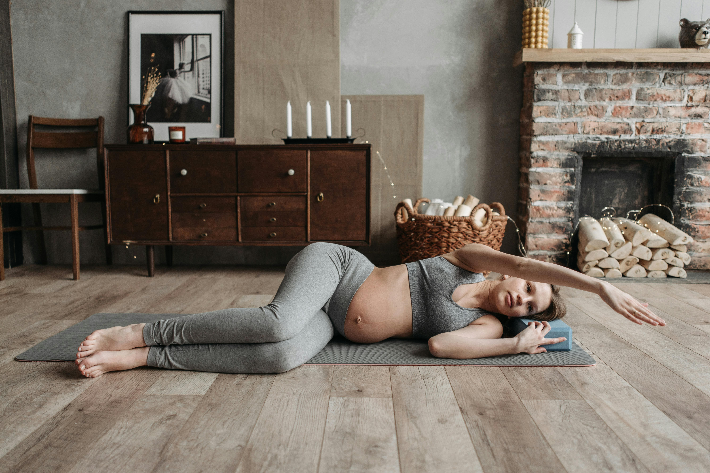

Let us be honest with each other. When you are in your first trimester and exhausted beyond words and possibly nauseous, the last thing anyone wants to hear is that they should exercise. Go for a walk! Try prenatal yoga! Stay active! And you are lying on the couch willing yourself not to be sick, thinking absolutely not.
I hear you. First trimester you gets a complete pass.
But here is the thing nobody tells you clearly enough. Moving your body during pregnancy is genuinely one of the best things you can do for yourself and your baby. Not because you need to maintain your pre-pregnancy figure. Not because you should be some kind of glowing athletic goddess bump in hand. But because it helps with the back pain, the sleep, the mood swings, the energy levels, and honestly the labour itself.
Exercise during pregnancy is not about how you look. It is about how you feel. And when it is done right, it feels really good.
This guide covers what is actually safe at every stage, what to skip, and how to move your body in a way that supports you rather than exhausts you even more. Trimester by trimester, simple and straightforward. Because pregnancy is already hard enough without complicated fitness advice.
Moving your body during pregnancy is one of the kindest things you can do for yourself. Let us keep it simple and actually enjoyable.
Why exercise during pregnancy matters
Here is the short version: moving your body during pregnancy helps with almost everything. The back pain. The sleep. The mood. The energy. The labour itself. Studies consistently show that women who exercise regularly during pregnancy have lower rates of gestational diabetes, less depression, and faster recovery after birth. The research on this is really solid.
And that old advice to rest and take it easy? Officially outdated. Current guidelines actually recommend 150 minutes of moderate exercise per week during pregnancy — the same as for everyone else. Your body can handle movement. It was designed for it.
Exercise safety — the essential rules

Before you start or continue any exercise routine during pregnancy, check in with your midwife or doctor. Most women can exercise safely throughout all three trimesters but there are some conditions where things need to be modified. Your provider will know if any of those apply to you.
Signs to stop exercising immediately
Stop and call your midwife or doctor if you experience any of these during exercise: vaginal bleeding, chest pain, severe breathlessness, dizziness, severe headache, calf pain or swelling, reduced baby movement, or painful contractions. These need to be checked before you continue.
General safety principles
- Stay hydrated — drink water before, during, and after exercise
- Avoid overheating — exercise in cool environments, avoid hot yoga or hot water exercise
- Wear supportive footwear — your centre of gravity changes in pregnancy, increasing injury risk
- Listen to your body — reduce intensity if you can't hold a conversation
- Avoid lying flat on your back after the first trimester — this can compress the vena cava
- Warm up and cool down — pregnancy hormones make joints more lax and prone to injury
Prenatal Yoga Mat — Extra Thick
A wider, thicker yoga mat provides the stability and cushioning your changing body needs during pregnancy yoga and stretching. Non-slip surface essential for safe practice.
View on Amazon → As an Amazon Associate we earn from qualifying purchases at no extra cost to you.First Trimester Exercise — Weeks 1-12
First trimester exercise is tough for the simple reason that you feel terrible. Nausea, exhaustion, sore everything. The good news is that if you were already exercising before pregnancy you can largely keep doing what you were doing with a few small modifications. And if you were not exercising before, gentle movement is a great place to start — even a slow daily walk counts.
Best exercises for the first trimester
- Walking — the safest and most accessible exercise throughout all of pregnancy. Even a 20-minute daily walk provides significant benefits.
- Swimming — zero impact on joints, naturally keeps you cool, and the water pressure provides gentle support for your growing uterus.
- Prenatal yoga — builds flexibility, practices breathing techniques for labour, and provides mental wellness benefits alongside physical ones.
- Light strength training — maintaining muscle mass supports posture and reduces back pain throughout pregnancy.
- Cycling on a stationary bike — removes fall risk while maintaining cardiovascular fitness.
What to avoid in the first trimester
Anything with a real fall risk — skiing, horseback riding, contact sports. Heavy lifting that involves holding your breath. Hot yoga or any heated exercise environment. And obviously anything that causes pain. If nausea is bad, a slow gentle walk is often more helpful than lying still — it can actually ease nausea through improved circulation. Worth trying on the days you feel up to it.
Second Trimester Exercise — Weeks 13-27
The second trimester is the sweet spot. The nausea has usually eased up, your energy is back, and the bump is big enough to feel real but not so big that it gets in the way of everything. Most women find this the easiest and most enjoyable trimester to exercise in. Make the most of it.
Key modifications from week 20
From around 20 weeks, avoid lying flat on your back for extended periods during exercise. Your growing uterus can press on a major vein in that position and reduce blood flow. Modify floor exercises to a side-lying position or use a wedge under your upper body. Quick transitions on your back are fine — it is sustained back-lying that is the issue.
If you have not started pelvic floor exercises yet, now is the time. Your pelvic floor is doing a lot of work supporting your growing uterus and it will be put through its paces during labour. Regular Kegels are associated with less tearing during birth and faster recovery afterwards. Two very good reasons to start today.
Pregnancy Support Belt
A maternity support belt reduces pelvic and back pain during exercise and daily activity by supporting the growing bump and reducing strain on the lower back and hips. Adjustable and suitable from second trimester.
View on Amazon → As an Amazon Associate we earn from qualifying purchases at no extra cost to you.Third Trimester Exercise — Weeks 28-40
Third trimester exercise requires the most adjusting but it is still absolutely worth doing. Your centre of gravity has shifted so balance is different. You get breathless faster. Round ligament pain and pelvic girdle pain might mean you need to dial back the intensity. Listen to your body and adjust as needed. Walking, swimming, and prenatal yoga are all excellent choices right up to the end.
Focus areas for third trimester
- Pelvic floor exercises — daily Kegels and diaphragmatic breathing prepare for labour and postpartum recovery
- Gentle walking — shorter, more frequent walks may be more comfortable than longer ones
- Swimming — the water supports your bump weight, making this increasingly comfortable as pregnancy advances
- Prenatal yoga focusing on hip opening — cat-cow, child's pose, and figure-four stretches prepare your hips for labour
- Birthing ball exercises — gentle rocking, hip circles, and sitting on a birthing ball encourage optimal fetal positioning
Birthing Ball — Anti-Burst Pregnancy Exercise Ball
A quality anti-burst birthing ball supports pelvic floor exercises, hip opening, and fetal positioning in the third trimester. Also used during labour for pain management and optimal positioning.
View on Amazon → As an Amazon Associate we earn from qualifying purchases at no extra cost to you.Pelvic floor exercises — the most important exercise in pregnancy
If you only do one thing for exercise during your entire pregnancy, make it pelvic floor exercises. The pelvic floor supports your bladder, uterus, and bowel. It holds the weight of your growing baby for nine months. It is central to labour. And its strength after birth determines how quickly you recover — including whether you experience leaking when you sneeze (which nobody talks about enough until it is happening to them).
How to do a Kegel: imagine you are trying to stop the flow of urine. Gently lift and squeeze those muscles, hold for 5-10 seconds, then fully release. Ten to fifteen reps, three times a day. The release is just as important as the squeeze — a pelvic floor that is too tight causes its own problems. You can do these anywhere. Waiting in a queue. Watching television. Nobody will know.
Exercise after a difficult pregnancy
If you are dealing with pelvic girdle pain, SPD, diastasis recti, or a high-risk pregnancy, the standard advice may not apply to you and that is completely okay. A women's health physiotherapist who specialises in pregnancy can give you a plan that works for your specific situation. They are worth every cent if you are struggling with any of these — the generic advice online will not cut it.
Get your free personalized plan
Complete week-by-week pregnancy guide — completely free, no sign-up required.
Create my free plan →